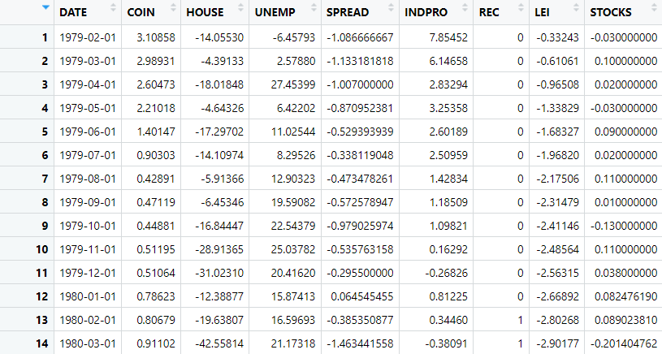
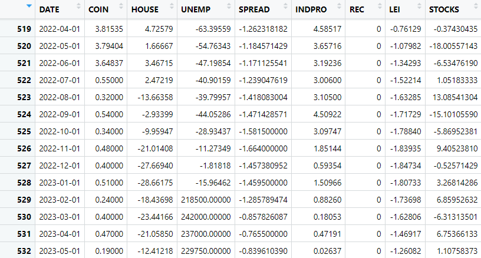
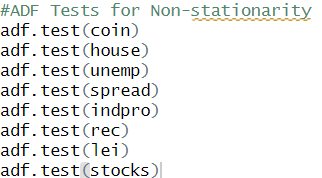
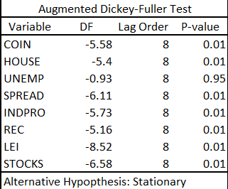
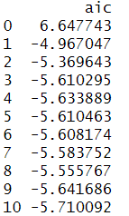
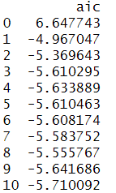

Recession Forecast
In this project we attempt to forecast the probability of an economic recession using a Vector Autoregression Model (VAR). We use leading economic indicators such as treasury spread, initial unemployment claims, and the State Coincidence Index to forecast the NBER Recession Indicator. The model is tested by its ability to predict the 2008 economic recession. To view the full R code, please follow the link below:
The Data
The data used for the model are monthly and percent change from a year ago. The percent change is to provide stationarity to the time series. The variables used are the state coincident index, new privately owned housing units under construction, initial unemployment claims, the treasury spread, the industrial production index, NBER recession indicator, leading economic index, and the wilshire 5000 total market index. As explained below, some of these variables were not included in the model either due to nonstationarity or not having a statistically significant correlation with the NBER recession indicator. The data starts in February, 1979 and ends in May, 2023, totalling 532 observations.
...........

We then plot the data to visually check for any irregularities. Lastly, we check the correlations between variables. The R code and table are presented below.
The source of all data is the St Louis Federal Reserve (FRED).
Testing for Stationarity
To test for stationarity we use the Augmented Dickey-Fuller Test (ADF). Below is the R code and results.

From the table you can see that with the variable unemployment we fail to reject the null hypothesis which means that the time series is not stationary for that variable. Therefore, we do not use unemployment in this model.
Vector Auto Regression and Forecast
First we select for the correct lag order by choosing the lowest AIC. We then estimate the coefficients and make the forecast.
 

The lowest aic number is the 10th lag order. Therefore, we estimate our VAR model with lag order 10.

Looking at the forecast results, we see that the highest probability of recession withing the next year is 25.5% in month 9. This barely meets the criteria of a "moderate chance" of recession. With below 25% being "low chance", 25% to 50% being "moderate chance", and above 50% being "high chance".

Thus, we conclude that within the next year there is a 25.5% probability of recession. This is a moderate chance of recession.
Model Test
We test the model by observing its ability to predict the 2008 recession. We do this by only giving it data through 2007.

The forecast for 2008 reaches up to 76% probability of recession which is classified as a "high chance".

We conclude that this model does indeed accurately forecast the probability of recession. It claims that there is a high chance of recession for 6 months in 2008.